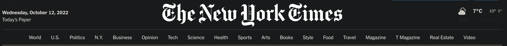
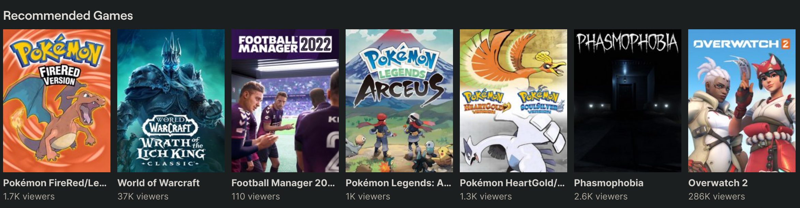
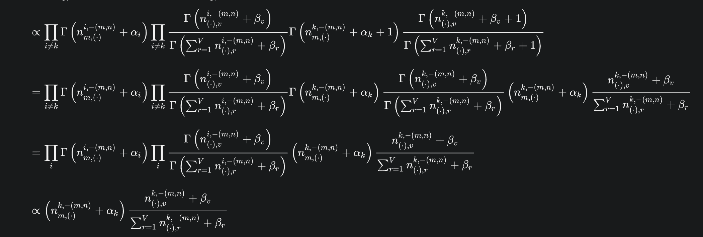
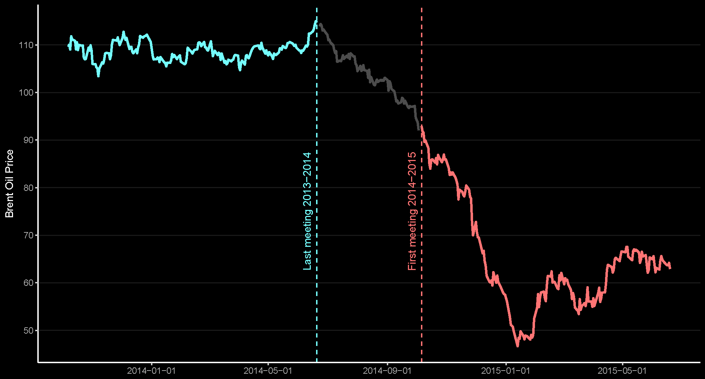

[08] Klassifisering av tekst – temamodellering

Martin Søyland <martin.soyland@stv.uio.no>
Disposisjon
- En øvelse i kategorisering
- Om emnemodellering
- Latent Dirichlet allocation (LDA)
- Structural Topic Models (STM)
- Emnemodeller i praksis
- Climate Politics in Hard Times
En øvelse i kategorisering
- Bruk 2 minutter på å diskutere hvilken kategori (emne) teksten kan klassifiseres som:
I Norge har vi mer enn nok plass, vi har folk som vil kjøpe hus og bygge hus som har fått lån, vi har bygningsarbeidere og entreprenører, vi har materialer og redskap. Hva er flaskehalsen? Den eneste ting politikere og byråkrater må sørge for, nemlig tillatelse til å bygge. Det er ikke regulert eller planlagt nok områder til boligbygging, selv om grunneiere står i kø for å selge. Det vi har nok av fra naturens side, nemlig plass, har politikere og byråkrater greid å gjøre til mangelvare.
Carl I. Hagen, FrPs landsmøte 1988
Hva er emnemodellering
Emnemodellering er klassifisering av
tekst ________________________________________________
Vi
bruker klassifisering til alt mulig
rart! üîé



Emnemodellering bruker sameksisterende ord til å estimere emner (topics)

I Norge har vi mer enn nok plass, vi har folk som vil kjøpe hus og bygge hus som har fått lån, vi har bygningsarbeidere og entreprenører, vi har materialer og redskap. Hva er flaskehalsen? Den eneste ting politikere og byråkrater må sørge for, nemlig tillatelse til å bygge. Det er ikke regulert eller planlagt nok områder til boligbygging, selv om grunneiere står i kø for å selge. Det vi har nok av fra naturens side, nemlig plass, har politikere og byråkrater greid å gjøre til mangelvare.
| Emne | Nøkkelord | Andel av tekst |
|---|---|---|
| Areal | Norge, plass, områder | 0.11 |
| Økonomi og eiendom | kjøpe, lån, mangelvare | 0.13 |
| Eiendomsutvikling | bygge, hus, redskap | 0.16 |
| Politikk of forvaltning | politikere, byråkrater | 0.16 |
| Andre ting | nok, gjøre, må | 0.44 |
Latent Dirichlet allocation (LDA)
- LDA er den en enkleste emnemodellen:
- En tekst kan bestå av mange emner (multi-membership)
- Emner er definert som å være en fordeling over et satt vokabular
- Emnene antas å ha eksistert før data ble generert
- Vi vet ikke innholdet i emnene før vi kjører modellen (sjult struktur)

- HUSK! Fokuser på å forstå det som kommer ut av modellen og hvordan vi kan validere det!
Antagelser
Rekkefølgen på ord betyr ingenting (sekk med ord)
Rekkefølgen på dokumentene betyr ingenting
Vi vet antall emner og det antallet er satt
Hvordan velge antall emner?
- Prøv noe
- Validere
- Prøv igjen
- Validere
- …
Structural Topic Models
- Veldig lik LDA bortsett fra:
- “Prevalence” parameteret
- ca som uavhengige variabler i en regresjon
- “Spectral” initialisering
- bedre på store corpus
- kan finne antall topics for deg
- “Prevalence” parameteret
üö® üö® üö®
When init.type=‘Spectral’ and K=0 the number of topics is set […] this does not estimate the ‘true’ number of topics and does not necessarily have any particular statistical properties for consistently estimating the number of topics. It can however provide a useful starting point.
üö® üö® üö®
Emnemodeller i praksis
Climate Politics in Hard Times

Metadata
## # A tibble: 4 × 3
## id rep_id text
## <chr> <chr> <chr>
## 1 tale211684 LIC Det er viktig at vi får unnagjort en del store saker i begy…
## 2 tale211693 KAAN På vegne av representantene Audun Lysbakken, Snorre Serigst…
## 3 tale211703 TROH Jeg har den glede å foreslå Bjørn Lødemel istedenfor Elisab…
## 4 tale211705 HTN Fremskrittspartiet ønsker å fremme forslag om at Oskar J. G…==================================
DFM
## Document-feature matrix of: 4 documents, 4 features (87.50% sparse) and 0 docvars.
## features
## docs fremme:verb fremme:verb forslag:subst fri:adj frist:subst
## tale211684 0 0 0 0
## tale211693 0 0 0 0
## tale211703 0 0 0 0
## tale211705 1 1 0 0Estimere LDA
library(stm)
# Estimerer LDA emnemodel med 20 emner
oil_lda <- stm(lemma_counts,
K = 20,
data = meta,
init.type = "LDA",
max.em.its = 50)
# OBS: "max.em.its" Skal være mye høyere, men det tar lang tid å kjøre
# Bruk "default value" fra ?stm....................................................................................................
Completed E-Step (6 seconds).
Completed M-Step.
Completing Iteration 38 (approx. per word bound = -7.825, relative change = 1.931e-04)
....................................................................................................
Completed E-Step (6 seconds).
Completed M-Step.
Completing Iteration 39 (approx. per word bound = -7.823, relative change = 1.845e-04)
....................................................................................................LDA-resultater
Viktigste emner
Viktigste ord
## Topic 1 Top Words:
## Highest Prob: statsråd:subst, veldig:adj
## FREX: statsråd:subst, veldig:adj glad:adj
## Lift: utfordre:verb statsråd:subst, tenke:verb statsråd:subst
## Score: statsråd:subst, veldig:adj
## Topic 2 Top Words:
## Highest Prob: rundt:prep, diskusjon:subst
## FREX: faktum:subst, diskusjon:subst
## Lift: journalistikk:subst, produksjonsstøtte:subst
## Score: diskusjon:subst, rundt:prep
## Topic 3 Top Words:
## Highest Prob: arbeidsliv:subst, folk:subst
## FREX: arbeidstaker:subst, dumping:subst
## Lift: fleksibel:adj arbeidsliv:subst, fot:subst innenfor:prep
## Score: arbeidsliv:subst, arbeidstaker:subst
## Topic 4 Top Words:
## Highest Prob: prosjekt:subst, ny:adj
## FREX: transportplan:subst, stor:adj by:subst
## Lift: e39:subst, kollektivtiltak:subst
## Score: utbygging:subst, prosjekt:subst
## Topic 5 Top Words:
## Highest Prob: hel:adj, mene:verb
## FREX: ene:det, selvfølgelig:adj
## Lift: to:det hel:adj, bred:adj mulig:adj
## Score: hel:adj, egentlig:adj
## Topic 6 Top Words:
## Highest Prob: skole:subst, kommune:subst
## FREX: psykisk:adj, helsetjeneste:subst
## Lift: alvorlig:adj syke:subst, behandlingsplass:subst
## Score: pasient:subst, skole:subst
## Topic 7 Top Words:
## Highest Prob: norge:subst, mål:subst
## FREX: klimapolitikk:subst, fossil:adj
## Lift: global:adj oppvarming:subst, klimagass:subst
## Score: utslipp:subst, klimaforlik:subst
## Topic 8 Top Words:
## Highest Prob: se:verb, vei:subst
## FREX: vei:subst, helhetlig:adj
## Lift: mulig:adj vei:subst, hastighet:subst
## Score: vei:subst, se:verb
## Topic 9 Top Words:
## Highest Prob: komite:subst, sak:subst
## FREX: saksordfører:subst, enstemmig:adj
## Lift: komite:subst merke:verb, enstemmig:adj komité:subst
## Score: komite:subst, saksordfører:subst
## Topic 10 Top Words:
## Highest Prob: vilje:verb, frå:prep
## FREX: vilje:verb, frå:prep
## Lift: auke:adj, heil:adj land:subst
## Score: vilje:verb, seie:verb
## Topic 11 Top Words:
## Highest Prob: internasjonal:adj, norge:subst
## FREX: menneskerettighet:subst, utenriksminister:subst
## Lift: nordisk:subst råd:subst, frihandelsavtale:subst
## Score: utenriksminister:subst, internasjonal:adj
## Topic 12 Top Words:
## Highest Prob: grad:subst, kunnskap:subst
## FREX: utføre:verb, praktisk:adj
## Lift: innsamling:subst, god:adj ledelse:subst
## Score: høy:adj, kunnskap:subst
## Topic 13 Top Words:
## Highest Prob: politisk:adj, lov:subst
## FREX: folkevalgt:adj, styring:subst
## Lift: styrke:verb lokaldemokrati:subst, folkevalgt:adj nivå:subst
## Score: folkevalgt:adj, innbygger:subst
## Topic 14 Top Words:
## Highest Prob: budsjett:subst, kr:subst
## FREX: skattekutt:subst, mye:adj penge:subst
## Lift: 1 000:det kr:subst, beholde:verb mye:adj
## Score: kr:subst, budsjett:subst
## Topic 15 Top Words:
## Highest Prob: representant:subst, få:verb
## FREX: minister:subst, grande:subst
## Lift: signe:subst, liv:subst signe:subst
## Score: representant:subst, spørsmål:subst
## Topic 16 Top Words:
## Highest Prob: representant:subst, høre:verb
## FREX: høre:verb, spørre:verb
## Lift: eidem:subst, eidem:subst løvaas:subst
## Score: høre:verb, synes:verb
## Topic 17 Top Words:
## Highest Prob: land:subst, menneske:subst
## FREX: flyktning:subst, ta:verb imot:prep
## Lift: syrisk:adj flyktning:subst, norsk:adj forskning:subst
## Score: verden:subst, utdanning:subst
## Topic 18 Top Words:
## Highest Prob: barn:subst, liv:subst
## FREX: fengsel:subst, kriminell:adj
## Lift: soning:subst, voldtekt:subst
## Score: barn:subst, politi:subst
## Topic 19 Top Words:
## Highest Prob: næringsliv:subst, norsk:adj
## FREX: konkurransekraft:subst, matproduksjon:subst
## Lift: maritim:adj sektor:subst, selvforsyning:subst
## Score: næring:subst, verdiskaping:subst
## Topic 20 Top Words:
## Highest Prob: forslag:subst, folkeparti:subst
## FREX: kristelig:subst folkeparti:subst, kristelig:subst
## Lift: på vegne av:prep representant:subst, stemmeforklaring:subst
## Score: kristelig:subst folkeparti:subst, kristelig:substSøke etter ord i emner
## 1 topics contained 1 words in the list: 7## Topic 7 Top Words:
## Highest Prob: norge:subst, mål:subst, klima:subst, utslipp:subst, grønn:adj
## FREX: klimapolitikk:subst, fossil:adj, utslipp:subst, klimaforlik:subst, tonn:subst
## Lift: global:adj oppvarming:subst, klimagass:subst, klimaminister:subst, elektrifisere:verb, elektrifisering:subst utsirahøyden:subst
## Score: utslipp:subst, klimaforlik:subst, klimapolitikk:subst, fornybar:adj, fornybar:adj energi:substLese topptekster i emner
##
## Topic 7:
## Først vil jeg selvfølgelig trekke fram Lofoten, Vesterålen og Senja og også det andre området hvor det nå ikke blir petroleumsaktivitet, som har vært et stort stridstema over lang tid, og der man nå har fått en avklaring. Ellers vil jeg holde fast ved at det er et godt anslag for en ny og mer offensiv klimapolitikk, og spesielt legge til at her er det en økning i det grønne skatteskiftet. Men det er et anslag. Det er helt klart at det er helt avgjørende for å få en bedre klimapolitikk at tiltakene må stå i forhold til de oppgavene vi skal utføre. Når det gjelder klimaforliket, er det slik at vi skal redusere norske klimagassutslipp med 5 millioner tonn fram mot 2020. Dette krever en helt annen vilje ikke bare til å komme med tiltak, men måle resultatene av dem, slik at vi når det nødvendige målet som nå ligger der. Vi skal også forsterke klimaforliket.
## Jeg er glad for svaret og er enig i at vi må ha ambisiøse mål. Her er det mye politikk som må utvikles i årene framover, og det må være stor vilje over mange år. Samtidig: Det vi nå er inne i, er en innmelding til FN i forkant av forhandlingene som skal være i Paris i november. Ved å slutte oss til EUs klimarammeverk sikrer vi at den målsettingen vi nå melder inn, også vil bli gjennomført. Det kan resten av verden være trygg på. Samtidig må vi forvente at det blir krevende forhandlinger, og i tillegg til egne kutt har Norge et sterkt engasjement internasjonalt for å redusere utslipp, enten det gjelder skogsatsing, satsing på fornybar energi eller kjøp av klimakvoter internasjonalt, såkalte CDM-er. Når vi nå skal forhandle, vil våre ytterligere forpliktelser komme i tillegg til de 40 pst. som vi er enige med EU om å kutte. Da blir spørsmålet: Er statsministeren, som Venstre, villig til å forplikte Norge til klimamål utover de 40 pst. vi nå melder inn, selv om disse ikke kan motregnes mot norske kutt?
## Når det gjelder FNs klimakvoter, er det en egen diskusjon hvor de fleste vil være enige om at deres klimaeffekt er meget lav. I dette tilfellet snakker vi om kvoter fra EUs kvotemarked, og vi snakker om det faktum at klimatiltak handler om å kutte mengde CO2, tonn CO2 – ikke prosenter og kvoter. I henhold til det norske klimaforliket skal kutt av 12 millioner tonn norske klimagassutslipp dekkes opp gjennom kvotekjøp. Vi vet at kvotemarkedet – som statsråden selv påpeker – fungerer meget dårlig på grunn av lave priser. Spørsmålet er: Vil statsråden bidra til at man i mindre grad bruker et ikke-fungerende kvotemarked som virkemiddel i norsk klimapolitikk til faktisk å kutte utslipp, og i større grad ta utslippskutt her i Norge?Structural Topic Model (stm)
STM-resultater
Viktigste emner
üò† Hva er emne 10??? üò†
## [1] "tro:verb" "synes:verb" "i hvert fall:adv"
## [4] "egentlig:adj" "veldig:adj" "ganske:adv"
## [7] "diskutere:verb" "kanskje:adv" "ting:subst"
## [10] "lyst:subst" "ene:det" "veldig:adj mye:adj"
## [13] "veldig:adj god:adj" "litt:adj" "selvfølgelig:adj"
## [16] "hel:adj enig:adj" "veldig:adj tydelig:adj" "veldig:adj glad:adj"
## [19] "faktisk:adj" "veldig:adj bra:adj" "hel:adj riktig:adj"
## [22] "utrolig:adj" "hel:adj sikker:adj" "hel:adj ta:verb"
## [25] "få:verb lov:subst" "akkurat:adv" "nødt:adj"
## [28] "veldig:adj viktig:adj" "sikker:adj" "tenke:verb"Partiforskjeller i klimaemne
# Lager plot av forventet emneandel på et tilfeldig innlegg fra hvert parti
oil_eff <- estimateEffect(~ factor(party_id), oil_stm, metadata = meta)
## plot(oil_eff, covariate = "party_id", topics = 11)STM med “optimal” K
Evaluerer “optimal” STM
labelTopics(oil_stm_optimal, n = 5,
topics = klima)$frex[klima, ] %>%
t() # (Denne er bare for å få mer forståelig output)## [,1] [,2]
## [1,] "grønn:adj" "klimamål:subst"
## [2,] "skifte:subst" "klimaforlik:subst"
## [3,] "grønn:adj skifte:subst" "klimapolitikk:subst"
## [4,] "elbil:subst" "2030:det"
## [5,] "miljøvennlig:adj" "million:subst tonn:subst"Statistisk validering av STM
- Semantisk tolkbare emner kjennetegnes av:
- Det er sammenhengende; ordene med høy sannsynlighet
i et emne opptrer sammen innad i dokumenter
- Maksismeres når de mest sannsynlige ordene dukker opp sammen
- Det er eksklusivt; de høyest ladende ordene i et
emne, vil ikke være toppord i andre emner
- Maksimeres når ord bare tilhører ett emne
- Det er sammenhengende; ordene med høy sannsynlighet
i et emne opptrer sammen innad i dokumenter
Selv om disse målene er effektive og tolkbare, kan de ikke erstatte mennesklig tolkning!
Søk etter K
searchK()kan vise oss (statistisk) hvordan STM ser ut med forskjellig antallK
Hva med eksempelet fra starten?
## .## Emne: 6 Emne: 18 Emne: 59 Emne: 47 Emne: 1
## 0.446 0.157 0.145 0.071 0.025## Topic 6 Top Words:
## Highest Prob: kr:subst, per:prep, kostnad:subst, mens:sbu
## FREX: per:prep, årlig:adj, kr:subst per:prep, 7:det
## Lift: kr:subst per:prep, per:prep år:subst, kr:subst årlig:adj, 7:det kr:subst
## Score: kr:subst, kr:subst per:prep, årlig:adj, per:prep
## Topic 18 Top Words:
## Highest Prob: kr:subst, budsjett:subst, bevilgning:subst, middel:subst
## FREX: bevilgning:subst, 10:det kr:subst, kulturliv:subst, bevilge:verb
## Lift: kulturliv:subst, kulturløftet:subst, spaserstokk:subst, kulturell:adj spaserstokk:subst
## Score: kr:subst, bevilgning:subst, 10:det kr:subst, bevilge:verb
## Topic 59 Top Words:
## Highest Prob: politi:subst, justisminister:subst, vold:subst, overgrep:subst
## FREX: barnehus:subst, nær:adj relasjon:subst, overgrep:subst, vold:subst
## Lift: gjerningsperson:subst, barnehus:subst, dommeravhør:subst, justisbudsjett:subst
## Score: barnehus:subst, vold:subst, nær:adj relasjon:subst, politi:subst
## Topic 47 Top Words:
## Highest Prob: kr:fork, budsjett:subst, auke:verb, regjering:subst
## FREX: kr:fork, løyving:subst, auke:verb, kr:fork mye:adj
## Lift: kr:fork mye:adj, 1:det kr:fork, tryggje:verb, 10:det kr:fork
## Score: kr:fork, auke:verb, frå:prep, vilje:verb
## Topic 1 Top Words:
## Highest Prob: psykisk:adj, helse:subst, ung:adj, tiltak:subst
## FREX: skolehelsetjeneste:subst, helsestasjon:subst, psykisk:adj, psykisk:adj helse:subst
## Lift: lavterskeltilbud:subst, psykisk:adj problem:subst, psykisk:adj plage:subst, alvorlig:adj psykisk:adj
## Score: psykisk:adj, skolehelsetjeneste:subst, psykisk:adj helse:subst, helsestasjon:subst